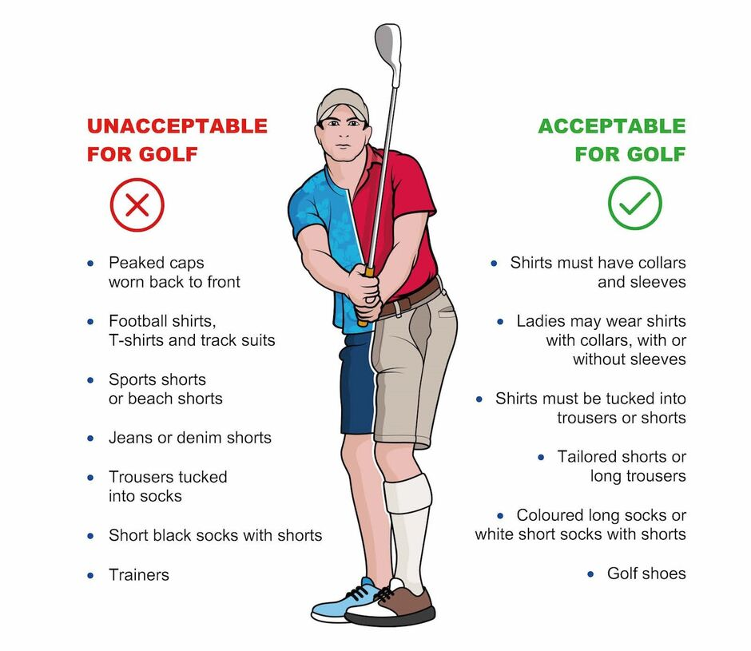

Golf clothing is important from a comfort standpoint, and many courses have strict rules about attire. These dress codes are not as restrictive as the rules for PGA Tour or LPGA Tour players, but they are designed to ensure that amateur players adhere to a certain protocol to help maintain the game's traditions
THIS IS THE EXAMPLE OF DRESSCODE THAT YOU SHOUL WEAR IF YOU WANT TO GO GOLFING